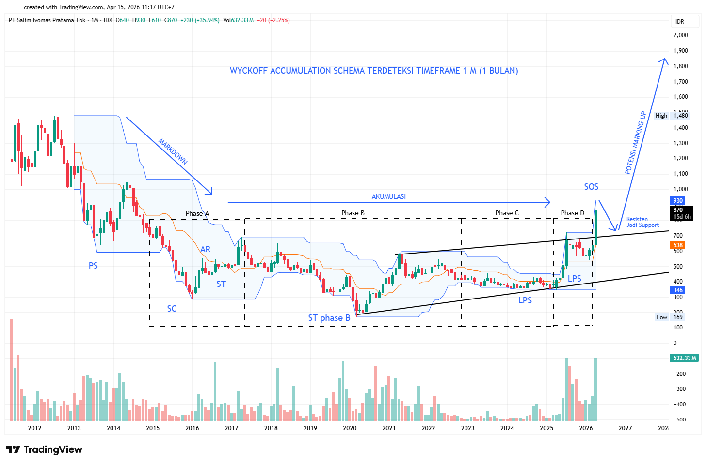

Latest Reports
PT Salim Ivomas Pratama Tbk (SIMP) merupakan usaha agribisnis yang terintegrasi dengan bisnis utama CPO (Kelapa Sawit).PT Indofood Sukses Makmur (INDF) tergabung di Indonesia dan Indofood Afri Resources Ltd Singapura adalah induk dari usaha tersebut.
Technical Summary : Wyckoff Strategies

Wyckoff SIMP terdeteksi di timeframe monthly (1M), artinya pergerakannya membutuhkan waktu yang sangat lama estimasi 1-2 tahun. Untuk fase saat ini adalah phase D Menuju E (Marking Up Target estimasi)
Daily Outlook :
SIMP Breakout dengan volume yang cukup besar untuk timeframe 1D (Daily) Setelah melewati pattern bullish Falling wedge dan golden cross Selanjutnya akan menentukan (HL) kedua untuk melanjutkan pantulan Untuk reentry disarankan ada 2 area 1. Area 800 dengan stoploss ketat dibawah harga 770 2. Area 700-610 dengan stoplos dibawah harga 600.
Berita Positif Tentang Emiten SIMP:Emiten SIMP Mempunyai lini bisnis perkebunan kelapa sawit dan pengolahan CPO, Pemerintah Indonesia merilis kebijakan mandatory B50 (Pencampuran BBM dengan olahan CPO/Biosolar) Mulai 1 Juli 2026. B50 yang dikenal sebagai pencampuran 50% minyak kelapa sawit (CPO) dan 50% solar, Selain itu ditengah krisis Perang Selat hormuz Iran dan Israel-US yang menyebabkan pasokan Minyak terhambat
https://www.bloomberg.com/news/articles/2026-03-31/indonesia-limits-fuel-sales-boosts-biofuel-to-curb-energy-risks
https://industri.kontan.co.id/news/pemerintah-terapkan-mandatori-b50-mulai-1-juli-2026
Double bottom confirmed. Exit strategy was executed at the primary resistance zone.
Final Gain: +15%. Currently waiting for a new entry signal on the retracement.